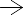
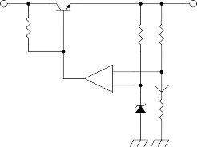
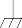
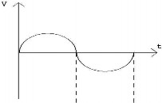
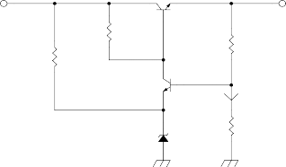
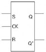

참조페이지 | 5~6 (★★★★☆) | 정답 |
R1 R2 R3 I V1 V2 V3 V
R1 = 5, R2 = 10, R3 = 15, V=90V 일 때 합성저항 R, 전류 I, 전압 V1, V2, V3를 구하시오 | ||
참조페이지 | 5~6 (★★★☆☆) | 정답 |
R1 R2 R3 I V1 V2 V3 V 저항 직렬 접속 회로에서 V=100V, R1 = 1, R2 = 2 , I = 2A 일 때 R3 ① 45 ② 46 ③ 47 ④ 48 | ||
참조페이지 | 5~6 (★★★☆☆) | 정답 |
R1 R2 R3 I V1 V2 V3 V 저항 직렬 접속 회로의 설명 중에서 잘못된 것은? ① V는 V1, V2, V3의 합과 같다. ② I 값은 R1, R2, R3에 동일하게 흐른다. ③ V1의 전압은 R1*I 이다. ④ I 값은 R1, R2, R3에 분배되어 흐른다. | ||
- 1 -
참조페이지 | 7~8 (★★★★☆) | 정답 | ||||
I1 R1 I2 R2 I3 R3 I V
, 를 구하시오. | 일 | 때 | 합성저항 | R과 | 전류 | |
참조페이지 | 7~8 (★★★☆☆) | 정답 |
I1 R1 I2 R2 I3 R3 I V
저항 병렬 접속 회로의 설명 중에서 잘못된 것은? ① 전체 저항 R은 R1, R2, R3의 합과 같다. ② I 값은 R1, R2, R3에 분배되어 흐른다. ③ R1, R2, R3에 공급되는 전압은 V 이다. ④ I1, I2, I3의 합은 I와 같다. | ||
참조페이지 | 8 (★★★★☆) | 정답 |
전압 3 I1 10 2 I2 5V 10V 다음 회로에서 전류 와 전압을 구하시오. | 합성저항 × 총 전류 ( ) × × | |




- 2 -
참조페이지 | 8~9 (★★★☆☆) | 정답 |
3 2V 5 25V 6V 4 1 5V 2 4V 다음 회로에서 흐르는 전류는 얼마인가? | 전압 V = 6-2+25-4+5 =30[V] 합성저항 R = 3+5+4+1+2 = 15[Ω] 전류 I = V/R = 30/15 = 2[A] | |
참조페이지 | 9 (★★★☆☆) | 정답 |
A2 R A1 다음 그림에서 직류계의 지시가 는30[mA], 는 20[mA], 저항 R값 | R에 흐르는 전류는 30[mA] -20[mA]이고, R 양단의 전압 은 × × × × | |
참조페이지 | 10 (★★★☆☆) | 정답 |
1㏁ 100V 2㏁ T 다음 그림과 같이 2㏁ 양단의 전압V.O.M(Tester)로 측정 했을 때 | T의 내부저항 = 10㏀/V× 100[V] = 1[㏁] 이 회로의 합성저항 RT는 RT = × = 전류 I는 I = = = × = = × ∴T의 양단 전압 = × × × | |
- 3 -
참조페이지 | 11 (★★☆☆☆) | 정답 |
80[Ω]의 저항과 60[Hz]의 교류에 대하여 60[Ω]의 용량 리액터스를 이 문제 .... 글쎄.... | с tan с sin × × sin × × sin tan ≒ sin × × sin × × sin | |
참조페이지 | 12 (★★☆☆☆) | 정답 |
다음의 RL 직렬회로에서 회로의 전류(I), 저항에 걸리는 전압(VR), 코일에 6[Ω] 8[Ω] I 100[V] | 합성저항 Z = Z = =10[Ω] 1. 전류 I = = = 10[A] 2. VR = I*R = 10× 6 = 60[V] 3. VL = I*XL = 10× 8 = 80[V] 4. 역률 = = = 0.6 | |
- 4 -
참조페이지 | 13 (★★☆☆☆) | 정답 |
직렬 공진 회로의 공진 주파수는 이다. 다음 회로의 공진 주파수를 구하시오. 10k 10uF 10mH | 공진 주파수 fo × × × × ∴ ≒ | |
참조페이지 | 13~14 (★★☆☆☆) | 정답 |
다음 회로를 보고 물음에 답하시오(단위는 Ω임) 6 10 18 I 20V |
역률 = = = 0.6 | |
참조페이지 | 15 (★☆☆☆☆) | 정답 |
최대 눈금 10[mA]의 전류계로 50[A]까지의 전류를 측정하려면 Ia Rs ra A I Ia | ||


- 5 -
참조페이지 | 16 (★☆☆☆☆) | 정답 |
내부저항 10[k Ω]인 전압계의 최대지시 눈금이 100[V]였다면 이 I + Rm V V VV - rV | ||
참조페이지 | 16 (★☆☆☆☆) | 정답 |
그림과 같은 회로에서 전류계 및 전압계의 지시값이 각각 2[A] 및 10[V]였다면 R값은 얼마인가?(단, 전류계의 내부저항은 0.5 Ω이다.) R A V | | |
- 6 -
참조페이지 | 17 (★☆☆☆☆) | 정답 |
전압계와 전류계를 그림과 같이 접속하고 부하전력을 측정 부하전력은?(단, 전압계 내부저항은 500[ Ω]이다.) A 직류전원 V 부하 | × | |
참조페이지 | 17~18 (★★★★☆) | 정답 | |
다음 회로에서 를 구하시오. V1=8[V] R1=4 a V2=12[V] R2=8 I R=2 | I1 I2 b | ---① | |
폐회로 a에서 제2법칙을 적용 | |||
| |||
---② | |||
폐회로 b에서 제2법칙을 적용 | |||
| |||
---③ | |||
식①을 ③에 대입 ---④ | |||
④×4-②를 하면 | |||
∴ | |||
- 7 -
참조페이지 | 18~19 (★★★★☆) | 정답 |
다음 회로에서 R2에 흐르는 전류가 0이되기 위한 의 값은? (단, E1=20[V], E2=10[V] ) R1 R3 I2 E1 R2 E2 I1 | E1 = R1*I1 + R2(I1-I2) - ① E2 = R3*I2 + R2(I2-I1) - ② R2에 흐르는 전류는 0이므로 I1 = I2 가 되므로 ①과 ②식은 다음 E1 = R1*I1 - ③ E2 = R3*I2 - ④ ③에서 ④에서 I1 = I2 이므로 ∴ | |
참조페이지 | 19 (★★★☆☆) | 정답 |
다음의 설명은 어떤 정리를 설명하고 있는 것인가? 선형소자로 구성되어있는 폐회로에서 회로망 내에 두 개 이상의 전원 ① 중첩의 정리 ② 테브난의 정리 ③ 노튼의 정리 ④ 밀만의 정리 | ||
- 8 -
참조페이지 | 20 (★★★★☆) | 정답 | ||||
중첩의 정리 | ′ ′ ″ ″ ′ ″ ″ ′ | |||||
| ||||||
일 때 를 구하시오. | ||||||
I1 R1 R2 I2 | I1 ' R1 | R2 I2 ' | I1 " R1 | R2 I2 " | ||
I3 | I3 ' | I3 " | ||||
V1 R3 V2 | = V1 | R3 | + | R3 V2 | ||
참조페이지 | 21~22 (★★★★☆) | 정답 |
테브낭의 정리 R1=3 R2=1 a E=12V R3=6 b 위 회로의 등가회로를 그릭호 Zab와 Vab를 구하 | × | |
- 9 -
참조페이지 | 25 (★★★☆☆) | 정답 |
휘트스톤 브릿지 위의 회로가 평형이 되었을 때 R1 값을 구하시 | × × ∴ | |
참조페이지 | 26 (★★★☆☆) | 정답 |
휘트스톤 브릿지 그림에서 R1=500[Ω], R2=1000[Ω], Rs=10[Ω], Cs=2.2[μF]일 때 평형을 이루었다. 이때의 Cx=P | R1, R2, Rs의 값을 조절하여 평형을 취하면 R1(Q+ ) = R2(Rs+ ) 양변의 상수부와 허수부를 같게 놓으면 R1Q+ = R2Rs + Q = ・ ・ ∴ P․Q = ․ ․ ․ = ・ = 10× 2.2× 10-6 답 : P・Q=22× 10-6 | |
참조페이지 | 27 (★★☆☆☆) | 정답 | |
전기저항 | 체적의 변화가 없으면 길이는 4배, ∴ ′ | 단면적은 배가 된 | |
굵기가 일정한 어떤 도체가 있다. 체적은 변하지 | |||
않고 지름을 로 되게 잡아 늘렸다면 저항은 몇 | |||
배가 되는가? | |||
참조페이지 | 28 (★★☆☆☆) | 정답 |
전기저항 길이 10cm인 도선의 저항이 10[]이다. 이 도선 | 에서 이 2배로 되었으므로 ′ | |
- 10 -
참조페이지 | 28 (★☆☆☆☆) | 정답 |
소비전력 1kw의 전력을 소비하는 전열기를 10시간 동안 | × | |
참조페이지 | 29 (★☆☆☆☆) | 정답 | |
전압의 각도 표시(호도법) | × | ||
도수법으로 60도인 각도는 | 호도법으로 | 환산하 | |
면? | |||
참조페이지 | 29 (★☆☆☆☆) | 정답 |
전압의 각속도 표시 회전파가 1초에 60회전을 하면 각속도는 얼마인 | 60회전의 각도 × 각속도 | |
참조페이지 | 29,30 (★★★☆☆) | 정답 |
다음 중에서 전압의 표시 방법이 아닌 것은? ① 순시값 ② 최솟값 ③ 평균값 ④ 실효값 | ||
참조페이지 | 29,30 (★★★☆☆) | 정답 |
다음 중에서 전압의 표시 방법과 표시 형식을 서 로 연결하시오. ① 순시값 ㉠ ② 최댓값 ㉡ ③ 평균값 ㉢ VP-P ④ 실효값 ㉣ | ||
- 11 -
참조페이지 | 31 (★★☆☆☆) | 정답 |
R=4[Ω], ωL=3[Ω]을 직렬로 접속한 회로에 | 기본파에 대한 임피던스를 Z1, 제 3고조파에 대한 임피 던스를 Z3라고 하면 × | |
참조페이지 | 32 (★★★☆☆) | 정답 |
다음은 정전압 안정화 회로를 구성하는데 필요한 다양한 전자부품을 이용한 방법들을 기술한 내용 ① 입력 전압의 변동이 있어도 출력 전압을 일정 ② 78, 79 시리즈의 리니어 타입의 레귤레이터를 ③ 기준 전압과 변동하는 출력 전압의 차이를 검 ④ 다이오드의 특성 중 하나인 역방향에서의 항복 수 있도록 제너 다이오드를 사용한다. | ||
- 12 -
참조페이지 | 34 (★★☆☆☆) | 정답 |
다음 회로에서 출력 전압과 트랜지스터의 값 을 구하시오 TR R Vi RL Vo Vz 조건) | ① ② 의 ( : 트랜지스터의 Collector와 Emitter 양단의 전 | |
참조페이지 | 35 (★★☆☆☆) | 정답 |
와 에 걸리는 전류와 전압을 구하시오. R2 R1 R3 Vi RL R4 Vz 조건) , , , (트랜지스터의 Base에 흐르는 전류는 무시한다.) |
× | |

- 13 -
참조페이지 | 36 (★★☆☆☆) | 정답 |
다음 회로를 보고 Vo를 구하시오. 2K 1K 2 - 6 3 + Vo 2V 10K 10K 3V I 10K (조건) | 콜렉터 전압 × | |
참조페이지 | 37 (★★☆☆☆) | 정답 |
다음 회로를 보고 Vo를 구하시오. Vi Vo R4 R3 R1 - 2 A 6 + 3 I Vz R2 (조건)A점의 전압은 OP-AMP의 회로 해석상 입력 | ∴ | |
참조페이지 | 38 (★★★★☆) | 정답 |
다음 중에서 이상적인 OP-AMP의 특징이 아닌 것은? ① 입력 임피던스 무한대 ② 전압 증폭도 무한대 ③ 출력 임피던스 무한대 ④ 대역폭 무한대 | ||

- 14 -
참조페이지 | 38 (★★★★☆) | 정답 |
다음 반전 증폭기의 출력 전압 Vo를 구하시오. Rf Vi R1 2 - Vo 6 3 + i | 출력 전압 ∴ | |
참조페이지 | 39 (★★★★☆) | 정답 |
다음 비반전 증폭기의 출력 전압 Vo를 구하시오. R2 R1 Vo 2 6 3 Vi | ∴ | |
참조페이지 | 41 (★★★★☆) | 정답 |
다음 회로의 출력 전압을 계산하시오. R2 R1 Vo 2 6 Vi 3 R3 V1 R4 | 1. 증폭도 : OP-AMP의 입력 전압은 ping에 걸리는 전압 전압이 된다. 여기서 ∴ | |
참고 (Amplitude Voltage feedback) 전압 궤환 증폭도 증폭도 | ||
+
-
+
-
- 15 -
참조페이지 | 42 (★★★★☆) | 정답 |
다음 회로의 출력 전압을 구하고 회로의 용도를 R2 Vi R1 2 - Vo 6 3 + | 의 값을 선정하면 입력의 극성을 바꾸는 회로가 된다. 에서 이므로 ∴ 1k Vi 1k 2 - Vo 6 사인파 3 + 극성이반전된사인파 | |
참조페이지 | 43 (★★★★☆) | 정답 |
다음 회로에서 부하 에 흐르는 전류의 값은? 20K 5K 2 - 6 3 + Vo 2V RL =10K | ∴ 전류 | |
참조페이지 | 43 (★★★★☆) | 정답 |
아래의 OP-AMP 회로에서 부하저항 에 흐르는 +12V RL R1 R2 2 - 6 3 + 조건) Vz = 6V | | |

- 16 -
참조페이지 | 44 (★★★★☆) | 정답 |
아래의 OP-AMP 회로에서 부하저항 에 흐르는 +12V RL R1 R2 2 - 6 3 + 조건) Vz = 6V | | |
참조페이지 | 45 (★☆☆☆☆) | 정답 |
다음 회로에 대한 설명으로 잘못된 것은? Vi 3 Vo 6 2 ① 완충 증폭기 ② 전압이득 = 1 ③ 입력 저항이 높아지고 출력저항은 낮아져 임피 ④ 전류 Follower | ||
-
+
- 17 -
참조페이지 | 46 (★★★☆☆) | 정답 |
다음 회로의 출력 전압을 구하고 회로명을 쓰시 오. V1 R1 Rf R2 V2 2 - 6 3 Vo + 조건) | 두 입력이 들어오므로 두 회로를 각각 계산하여 더 하면 회로명 : 가산기 | |
참조페이지 | 46 (★★★☆☆) | 정답 |
다음 회로에서 출력전압(Vo)을 구하시오. Rf R1 V1 - Vo V2 + R2 R3 조건) (V1 = 10V, V2 = 20V, R1 = Rf = 10KΩ, R2 = | 중첩의 원리에 의해 1) OP-Amp는 반전 증폭기로 동작하므로 2) OP-AMP는 비반전 증폭기로 동작하므로 × × ∴ | |
- 18 -
참조페이지 | 47 (★★★☆☆) | 정답 |
다음 회로에서 출력전압(Vo)을 구하시오. 3K 6K -1V 2K -2V 2 - 6 3 + Vo 1K -3V
| × × × ∴ | |
참조페이지 | 49 (★★★☆☆) | 정답 |
다음 그림에서 2진입력 D3 ,D2 ,D1 ,D0의 입력 ON Rf D3 R3 10㏀ 10㏀ D2 R2 20㏀ D1 R1 40㏀ 아날로그출력 VOUT D0 R0 80㏀ Vi (8V) (D3, D1 : ON D2, D0 : OFF) | Vout = - Vi - Vi - Vi - Vi 에서 주어진 조건을 대입하면 Vout = - × 0 - × 8 - × 0 - × 8 = -10[V] | |
참조페이지 | 50 (★★★☆☆) | 정답 |
다음 회로를 보고 출력전압을 구하시오. 30k 10k 10k 4V 2 - 6 10k 2 3 + - 6 3 + 20k 20k 10k 10V 2 - 6 3 + | 출력전압 Vo × × ∴ | |
+
-
- 19 -
참조페이지 | 51 (★★★☆☆) | 정답 | ||
다음 회로의 증폭도를 구하시오. 10k 10k 2 - 6 10k 3 + 10V Vi | 2 - 3 + | 10k 6 | Vo | ∴ |
참조페이지 | 51 (★★★★☆) | 정답 | ||
다음 회로의 Vo를 구하시오. 10k 10k 2 - 6 10k 3 + 10V Vi | 2 - 3 + | 10k 6 | Vo | 그러나, 전원이 8V이므로 출력 전압은 8V로 Clipper됨. |
참조페이지 | 52 (★★☆☆☆) | 정답 |
다음 회로의 증폭도를 구하시오. 5k 2k 2 - 3 6 Vo + Vi 2V
| × × | |

- 20 -
참조페이지 | 52 (★★☆☆☆) | 정답 |
다음 회로를 보고 A점의 전압, B점의 전압, C 점 2K A 10K 1K -4V 2 - 6 2 10K B - 1K 3 + 3 6 2 - 6 + 2V 3 + 10K 2K C 2 - 6 3 2 Vout 3 + 6 10K 10K | 가. Ⓐ점의 전압: Ⓐ점의 전압 × × 나. Ⓑ점의 전압: Ⓑ점의 전압 × 다. Ⓒ점의 전압: Ⓒ점의 전압 × × × × ∴ 라. 점선안의 회로 명칭 완충 증폭기(BUFFER), 전압 Follower | |
참조페이지 | 52 (★★☆☆☆) | 정답 |
아래 회로에서 Vo는? | × × Point A에서의 전류 방정식 ( KCL ) ∴ ≓ | |
-
+
- 21 -
참조페이지 | 55~56 (★★★★☆) | 정답 |
다음 그림의 회로는? R2 Vi R1 2 - Vo 6 3 + ① 반전증폭기 ② 비반전증폭기 ③ 차동증폭기 ④ 전압팔로워 | ① | |
반전 증폭기의 전압이득은 어떤가? ① 1보다 작다 ② 1과 같다 ③ 1보다 크다 ④ 위의 모든 항이 해당 된다. | ① | |
반전 증폭기의 출력 신호는 그 입력신호와 어느 정도의 위상차를 갖는가? ① 0도 ② 90도 ③ 180도 ④ 270도 | ③ | |
비반전 증폭기의 전압이득은 어떤가? ① 1보다 작다. ② 1과 같다. ③ 1보다 크다. ④ 위의 모든 항이 해당된다. | ③ | |
비반전 증폭기의 출력 신호는 그 입력신호와 어느 정도의 위상차를 갖는가? ① 0도 ② 90도 ③ 180도 ④ 270도 | ① | |
- 22 -
참조페이지 | 57 (★★★★★) | 정답 | ||||||||||||
다음 회로의 특징은 무엇인가? Rf CF R1 Vi 2 - 6 Vo 3 + ① 입력전압의 시간에 따라서 누적 합에 비례하는 ② 시간의 변화에 따라서 전압의 변화가 있을 때 ③ 입력저항이 높아지고 출력저항은 더욱 낮아진 ④ Vo는 Vi과는 관계가 있으나 CF 값과는 관계가 없다. | ||||||||||||||
적분 회로 Vi R 보상 적분 회로 R1 Vi | C | 미분 회로 C Vi 보상 미분 회로 R1 Vi | - + | RF | - + | |||||||||
2 3 | - + | 6 | Vo | 2 3 | 6 | Vo | ||||||||
Rf | RF | |||||||||||||
2 3 | CF - + | 6 | Vo | C | 2 3 | 6 | Vo | |||||||
- 23 -
참조페이지 | 61 (★★★★☆) | 정답 |
출력 파형의 전압을 구하시오 | (단, 삼각파의 t1=t2이며 주파수는 100Hz이다.) f=100Hz t=0.01sec ∴t1=t2=0.005sec Vo(t1)=-RfC(2Vm/t1) = sec Vo(t2)=RfC(2Vm/t2)=1.6V | |
참조페이지 | 62~64 (★★☆☆☆) | 정답 |
FET의 동작 상태에 따라 출력에서 나오는 전압을 (R1=R2임), <단, 저항은 모두 같다.> R2 R1 V i 2 - 6 3 + V o R3 V s 2SK68 1. 2SK68 동작 Vs(Gate전압) = 0이면 ON Vs가 0V 일 때, Vs가 –V 일 때 2 경우를 계산 | Vs=0이면 R2 R1 Vi 2 - 6 3 + Vo 반전 회로가 되므로 Vs=-V이면 R2 R1 Vi 2 - 6 Vo 3 + R3 ↓ ↓ ↓ ↓ ↓ R2 R1 Vi 2 - 6 Vi 3 + Vo R3 중첩의 원리에 의해 | |
- 24 -
참조페이지 | 65~67 (★★☆☆☆) | 정답 |
FET의 동작 상태에 따라 출력에서 나오는 전압을 (R1=R2임), <단, 저항은 모두 같다.> R2 R1 Vi 2 - 6 3 + Vo R3 Vs R4 2SK68 1. 2SK68 동작 Vs(Gate전압) = 0이면 ON Vs가 0V 일 때, Vs가 –V 일 때 2 경우를 계산 | Vs=0이면 R2 R1 Vi 2 - 6 3 Vo + 반전 회로가 되므로 Vs=-V이면 R20 R19 Vi 2 - 6 3 + Vo R18 VI/2 R17 ↓ ↓ ↓ ↓ ↓ R2 R1 Vi 2 - 6 Vo Vi/2 3 + 중첩의 원리에 의해 | |

- 25 -
참조페이지 | 68 (★★★★☆) | 정답 |
다음 능동필터 회로를 설명한 것 중 잘못된 것 은? ① 저역통과필터는 저주파는 통과하고 차단 주파 ② 고역통과필터는 고주파는 통과하고 차단주파수 ③ 대역통과필터는 설정된 대역 주파수는 통과하 ④ 대역차단필터는 설정된 대역 주파수를 차단하 다. | ||
참조페이지 | 69 (★★★★☆) | 정답 |
C=0.015uF, R=10KΩ 일 때 차단 주파수를 구하 시오. R 2 - 6 Vo Vi 3 + C | 저주파 신호는 통과하고 차단 주파수 이상의 주파수는 차 (고역 차단 주파수) | |
참조페이지 | 71 (★★★★☆) | 정답 |
C=0.015uF, R=10KΩ 일 때 차단 주파수를 구하 시오. C 2 - 6 Vo Vi 3 + R | (저역 차단 주파수) 저역 차단 주파수 이하는 차단시키고 이상은 통 | |

- 26 -
참조페이지 | 72 (★★★★☆) | 정답 |
일 때 고역차단 주파수 값을 구하라. R3 RF R1 R2 2 - 6 Vo Vi 3 + C1 C2 | 를 만족할 때 의 값이 다를 때 | |
참조페이지 | 74 (★★★★☆) | 정답 |
다음 회로의 출력 Vo을 구하시오. +10V 2 - 6 3 + 2V RL Vo Vi +10V | | |

4
7
- 27 -
4
8
참조페이지 | 75 (★★★★☆) | 정답 |
LED1, LED2의 동작하는 조건을 알아보자 +9V 8.2K +9V A 2 - 1 330 입력 3 + LED1 2K 6 - 330 7 B 5 + LED2 1k LM358 A점의 전위 = × B점의 전위 = × | ① LM358 pin1 출력이 +9V가 되어 LED1 ② LM358 pin7 출력이 +9V가 되어 LED2 동작 ③ LM358 pin1, 7번의 출력이 0가 | |
4
8
참조페이지 | 75 (★★★★☆) | 정답 |
다음 회로의 동작 상태를 해석한 것으로 올바르지 않은 것은? +9V 8.2K +9V A 2 - 1 330 입력 3 + LED1 2K 6 - 330 7 B 5 + LED2 1k LM358 ① LM358 pin1 출력이 +9V가 되어 ② LM358 pin7 출력이 +9V가 되어 LED2가 동작한다 ③ LM358 pin1, 7번의 출력 ④ LM358 pin1, 7번의 출력 이 5V가 되어 LED1, 2가 동작된다. | ||
- 28 -
참조페이지 | 76 (★★★★☆) | 정답 |
다음 회로의 동작 상태를 해석한 것으로 올바르지 않은 것은? +15V +15V +15V 1K 50K 3 + 6 2 - 100K -15V +10V A 9K 1K ① A점의 전압은 × ② 가변저항 50K을 조절하여 OP-AMP의 pin3번 ③ pin6번의 전압은 제너다이오드에서 일정전압 ④ 가변저항 50K을 조절하여 OP-AMP pin3번 되어 LED는 동작하지 않는다. | ||

4
7
- 29 -
참조페이지 | 78 (★★★★☆) | 정답 |
다음 회로를 설명한 것 중 올바른 것은? Vi 2 - 6 5 V 3 + Vo I 1 10K I 2 A 10K ① OP-AMP의 입력 단자는 동전위로 ② Vo의 값 × ③ I2의 값 OP-AMP의 입력 임피던스는 0이므로 무한대 ④ 증폭도 | ||
참조페이지 | 80 (★★☆☆☆) | 정답 |
출력파형을 그리시오(단, Diode가 도통되었을 때 R D Vi Vo E GND |
| |

- 30 -
참조페이지 | 81 (★★☆☆☆) | 정답 |
출력파형을 그리시오(단, Diode가 도통되었을 때 D Vi R Vo | 입력파형  출력파형
| |
참조페이지 | 82 (★★☆☆☆) | 정답 |
다음 회로에서 출력 파형을 그리시오. (단, D1 R D2 D3 Vi Vo 10V 3V | 입력파형
출력파형
| |
- 31 -
참조페이지 | 83 (★★☆☆☆) | 정답 |
다음 회로에서 출력 파형을 그리시오. (단, R D Vi Vo 10V 5V | 입력파형
출력파형 | |
참조페이지 | 84 (★★☆☆☆) | 정답 |
다음 회로에서 출력 파형을 그리시오. (단, D 2V Vi R Vo 10V | 입력파형 출력파형
| |
- 32 -
참조페이지 | 85 (★★☆☆☆) | 정답 |
다음 회로에서 출력 파형을 그리시오. (단, R D1 D2 Vi Vo 10V 3V | 입력파형
출력파형
| |
참조페이지 | 86 (★★☆☆☆) | 정답 |
다음 회로에서 출력 파형을 그리시오. (단, D 3V Vi=10V R Vo | 입력파형 출력파형
| |
- 33 -
참조페이지 | 87 (★★☆☆☆) | 정답 |
다음 회로에서 출력 파형을 그리시오. (단, +5V D Vi R Vo | 입력파형
출력파형
| |
참조페이지 | 88 (★★☆☆☆) | 정답 |
리미트 회로 그림과 같은 회로의 입력측에 정현파를 가할 때 R Vi Vo (Diode 도통시 전압강하는 0V이다.) | 입력파형
출력파형
| |
- 34 -
참조페이지 | 89 (★★☆☆☆) | 정답 |
슬라이스 회로 그림과 같은 회로의 입력측에 정현파를 가할 때 R D1 D2 Vi Vo VR1 VR2 Vi>VR2>VR1) | 입력파형
출력파형
| |
입력신호 | 출력신호 | 다이오드 상태 |
Vi<VR1 | Vo=VR1 | D1: ON , D2: OFF |
VR1<Vi<VR2 | Vo=Vi | D1: OFF , D2: OFF |
Vi>VR2 | Vo=VR2 | D1: OFF , D2: ON |
- 35 -
참조페이지 | 80~89 (★★★★☆) | 회로 (정답) | |||||||
Vi | R D | Vo | D | ||||||
Vi | R | Vo | |||||||
GND | |||||||||
다음 그래프와 같이 출력이 발생하는 회로 모두를 | |||||||||
Vi | R | D1 D2 | Vo | Vi | D1 | R Vo 3V | |||
골라라. | |||||||||
입력파형 | |||||||||
Vi | D | 2V | R | Vo | Vi=10V | D 3V | R | Vo GND | |
+5V D | R | ||||||||
출력파형 | D1 | D2 | |||||||
Vi R Vo | Vi | VR1 | Vo VR2 | ||||||
Vi | R | Vo | |||||||
- 36 -
참조페이지 | 91 (★★☆☆☆) | 정답 |
다음 회로의 명칭을 쓰고 출력파형을 그리시오. C D Vi R Vo 3V |
V Vi( 입력파형) +10V 0 t -10V V Vo( 출력파형) 23V 3V 0 t | |
참조페이지 | 92 (★★★★☆) | 정답 |
다음 회로는 NAND게이트를 이용한 비안전 멀 티바이브레이터 회로이다. 발진 주기와 발진 주 2 A C2 B 5 C 1 4 D 3 6 100u R3 R4 1k 1k C3 | 1) 발진주기 : ≒ [sec] (단, C1=C3=C, R3=R4=R) 2) 발진 주파수 × × × | |


- 37 -
참조페이지 | 93~94 (★★★★★) | 정답 |
다음 회로는 NE555를 이용한 비안전 멀 오른쪽의 공식들은 매우 중요합니다. | (충전) ≓ (방전) ≓ ∴ Duty Cycle
Pulse 파형의 한 주기 동안에 실제로 Energy를 송출할 수 있는 D= × | |
참조페이지 | 94 (★★★★★) | 정답 |
Frequency가 1Khz인 파형의 충격계수가 | ||
참조페이지 | 95 (★★★★★) | 정답 |
다음 파형에서 Duty Cycle(충격계수)는 | ∴ | |
D= = 펄스폭 으로 정의한다. | ||
주기 | ||
다음 파형의 Duty Cycle의 값은? | ||
(단, 주파수는 100hz임) | ||
- 38 -
참조페이지 | 96 (★★★★★) | 정답 |
다음 회로에서 출력 주파수(fo)를 구하시오. R1 R2 10k 10k +15V C1 0.03uF 2 - 3 OUTPUT 6 + C2 C3 0.015uF 0.015uF -15V R4 20k R3 5k | × × × × [답] 왼쪽의 회로명칭(병렬 T 발진회로)은 무엇인지, 다른 멀티 을지 고민해볼 필요 있음. | |
4
7
4
7
참조페이지 | 98 (★★★★★) | 정답 |
아래 회로에서 듀티비 50%일 경우 발진주파수(f) 를 구하시오. (단, 소수점 2째 자리까지 구하시 +12V R1 47k R3 27k U1 D1 3 + 2 6 OUTPUT - 1S1555 R2 R4 5.6k D2 1S1555 47k C1 22uF R5 100k D3 1S1555 | [풀이] R5를 중앙에 놓으면 듀티비 50%의 정사각형파가 × × × × × × [답] f=0.41[Hz] 왼쪽의 회로명칭(회로명칭이 없을 수도 있음)은 무엇인지, | |
- 39 -
참조페이지 | 99 (★★★★☆) | 정답 | ||
다음은 DA 변환회로중에서 설명인데, 이해하기 바랍니다. 2R 22 R 2R 21 R 20 2R 2R | R-2R | 회로에 | 대한 | ① 일 때 출력 전압은? (단, 디지털 신호의 크기는 5V이다.) 3bit이므로 나눌 수 있는 값은 이므로 5V를 8로 나 0.625V가 된다. 그러므로 의 크기는 4이므 × 가 된다. ② 이면 × × |
Vo | ||||
참조페이지 | 100 (★★★★☆) | 정답 |
입력 CLK이 4개 들어왔을 때 출력 전압을 구하시오. (단, 4518의 Vcc는 5V이다) 20K 입력 2 Q3 출력 6 EN Q2 5 20K 10K 1 CLK Q1 4 10K 7 RST Q0 3 20K 4518 10K 20K 20K | ||
참조페이지 | 101 (★★☆☆☆) | 정답 |
인 직렬 회로에 10V의 직류 전압을 가했을 때의 시상수는? R E C | ||
- 40 -
참조페이지 | 104 (★★☆☆☆) | 정답 |
PUSH 스위치에 의한 풀업 회로에서 스위치를 눌렀을 때 시상수, 스위치를 떼었을 때 시상수를 구하라 VCC R1 22k 1 R2 A 2 3 OUT 22k 7400 C1 D 4.7u 1S1588 | 스위치를 눌렀을 때 충전 시상수 : T=C1(R1,R2)[sec] 스위치를 떼었을 때 방전 시상수 : T=C1 ‧ R2[sec] 위의 공식을 사용하여 계산해야 함. | |
참조페이지 | 105~108 (★★★★☆) | 정답 |
다음은 변조회로의 설명이다 잘못 설명된 것은? ①AM(Amplitude Modulation) : 정보 신호에 따라 진폭을 변화한다 ②PAM(Pulse Amplitude Modulation) : 정보 신호에 따라 주파수을 변화한다. ③PWM(Pulse Width Modulation) : 정보 신호에 따라 펄스폭을 변화시킨다. ④PNM(Pulse Number Modulation) : 정보 신호에 따라 펄스의 수를 변화시킨다. | ||
참조페이지 | 108~110 (★★☆☆☆) | 정답 |
다음의 반도체 소자 설명 중 잘못된 것은? ① 써미스터(Thermistor) : 빛에 의해 전기 저항이 급히 변하는 소자 ② 바이스터(Varistor) : 전압에 따라서 저항이 변하는 전압-전류 특성 ③ 광도전셀 : 주로 CDS로 만들어지며 이러한 물질에 빛을 쪼여주면 ④ 포토다이오드 : 역바이어스된 PN접합 다이오드가 큰 저항을 나타내 ⑤ 포토 트랜지스터 : 트랜지스터 Base에 빛을 인가하면 Collector와 Emitter 사이에 전류가 흐르는 소자 | 1 | |
- 41 -
참조페이지 | 112 (★★★☆☆) | 정답 |
아래 회로에서 콜렉터에 흐르는 전류 (Ic)는 얼마인가? R1 R3 125k 15k E R2 R4 20k 2k | [풀이] ① R2 양단에 걸리는 전압 는 × × ② ≒ ③ × [답] | |
참조페이지 | 113 (★★★☆☆) | 정답 |
다음 트랜지스터 회로에서 VBE 및 VCE 의 값을 각각 구하시오. (단, Ic ≒ Ie=2[mA]가 흐른다.) +12V 9[㏀] 2[㏀] 입력신호 vCE vBE 3[㏀] 1[㏀] 10[uF] | [ 풀 이 ] 9[㏀] 양단에 9[V], 3[㏀] 양단에 3[V]의, 전압강하가 VBE = 3[V]-1[㏀]× 2[mA] = 3-2 = 1[V] = 12 - 2[㏀]× 2[mA] - 1[㏀]× 2[mA] = 12 - 4 - 2 = 6[V] | |
- 42 -
참조페이지 | 114 (★★★☆☆) | 정답 |
와 전류증폭률을 구하시오. Vcc RB RC Vi | ∴ | |
참조페이지 | 115 (★★★☆☆) | 정답 |
베이스 전류를 구하시오 10V R1=10K Q1 R2 5k | Transistor의 , Diode의 도통 × 다이오드의 도통 전압 × ∴ ∴ | |
- 43 -
참조페이지 | 116 (★★★☆☆) | 정답 |
다음 회로에서 콜렉터 전류 IC를 구하라.(단, R=24K, Vbe=0.7V이다.) -12V iC R R iB B = 50 | 베이스 전류 iB = = ∴ × 즉, Vcc전원이 -이므로 반대로 흐른다. | |
참조페이지 | 117 (★★★☆☆) | 정답 |
다음 회로에서 , , 를 구하시오. +10V RC RB RE -10V | [풀이] | |
- 44 -
참조페이지 | 119 (★★★☆☆) | 정답 |
다음 회로에서 , , , 를 각각 구하시오. (단, 임) +10V 100K 10K IB IC IE 10K -10V | 1) × ∴ 2) ≒ × ∴ 3) ≒ ≒ 4) ≒ 배 | |
참조페이지 | 120 (★★★☆☆) | 정답 |
그림의 증폭기 회로에서 회로소자 Rd=10[KΩ], Rg=1[ΜΩ], Rs=420[Ω], VDD=30[V]이고 Cs와 Cc는 매우 크다. 또한 ID=1.8[mA]이다.) | | |
∴ × × | ||
- 45 -
참조페이지 | 121 (★★★☆☆) | 정답 |
그림에서 VBE(sat) = 0.8[V], Q의 한계전압 VR = 0.5[V], Vcc=5V R1 RC D I1 Y A D P D1 D2 I
2 E |
× × × ∴ 전류증폭률 min | |
참조페이지 | 122 (★★★☆☆) | 정답 | |
다음 회로를 보고 다음을 구하시오. | 가. TR2의 Base 전압 ∴ × 나. × × × 다. Vce = Vi-Vo = 20 - 16.5 = 3.5[V] | ||
가. R2에 흐르는 전류[ I]의 값 | |||
나. 출력전압 Vo | |||
다. TR1의 Vce | |||
(Vbe=0.6V, R1=30KΩ, R2=20KΩ, R3=100KΩ, | R4=100K | ||
Ω, Vi=20V 단, TR2의 Base 전류는 무시한다.) | |||
Vi | Vo | ||
TR1 | |||
R3 | |||
R1 | |||
R4 | |||
TR2 I | |||
R2 | |||
6V | |||

- 46 -
참조페이지 | 124 (★★☆☆☆) | 정답 |
일 때 전파 정류 회로의 와 의 값을 계산하고 출력파형을 그리시오. D1
V2 Vo Vi RL D2 | ||
참조페이지 | 124 (★★★☆☆) | 정답 |
다음의 회로에서 sin 일 때 정상 상태 에서 양단의 전압은 몇 [V]인가?(단, 는 정상적인 C1 D2 Vs D1 C2 | 배전압 전류회로 이므로 × | |
참조페이지 | 125 (★★★☆☆) | 정답 |
다음의 디지털 직접회로 TTL, CMOS의 설명 중에서 잘못 된 것은? ① TTL은 트랜지스터의 구성으로 되어 있으며 일반적으로 ② CMOS는 FET의 구성으로 되어 있으며 일반적으로 ③ TTL의 동작전압은 5V 이고 팬아웃이 적고, 문턱전압이 ④ CMOS의 동작전압은 3~18V이고 팬아웃이 많으며 문턱 전압이 높다. | ||
- 47 -
참조페이지 | 129 (★☆☆☆☆) | 정답 |
• 의 보수를 구하시오. | • • • • • | |
입력 | 출력 | ||
A | B | C | Y |
0 | 0 | 0 | |
0 | 0 | 1 | |
0 | 1 | 0 | |
1 | 1 | 1 | |
참조페이지 | 130 (★★★★★) | 정답 |
A Y B 다이오드 AND 회로로 변경하시오 | +5V R D1 A D2 B Y | |
참조페이지 | 131 (★★★☆☆) | 정답 |
다음 회로의 동작 상태를 설명하고 진리표를 작성하시오. Vcc(+5V) R A C Y | ||
참조페이지 | 133 (★★★★★) | 정답 |
다이오드 OR 회로로 변경하시오 | D1 D2 B Y R | |
- 48 -
참조페이지 | 134 (★★★★★) | 정답 | ||
+5V | ||||
A Y | R2 | R1 | Y | |
트랜지스터 NOT 회로로 변경하시오 | A | TR1 | ||
참조페이지 | 135 (★★★★★) | 정답 |
다음 회로는 무슨 gate회로인가? +5V R1 +5V A B R3 output Y C R2 | NAND | |
참조페이지 | 139 (★★★★★) | 정답 | |
그림과 같은 정논리 회로의 출력은? (단, A, B, C, D는 입 VH [5V]
VO | VH =5[V] | ||
OR | |||
A | |||
B | |||
OR | Vo | ||
C | |||
D | |||
출력 (Vo) = (A+B) • (C+D) | |||

A | B | C | Y |
0 | 0 | 0 | 1 |
0 | 0 | 1 | 1 |
0 | 1 | 0 | 1 |
0 | 1 | 1 | 1 |
1 | 0 | 0 | 1 |
1 | 0 | 1 | 1 |
1 | 1 | 0 | 1 |
1 | 1 | 1 | 0 |
- 49 -
참조페이지 | 142 (★★★☆☆) | 정답 |
4입력 NAND게이트와 2입력 NAND게이트를 이용하여 4 EXCLUSIVE NOR 논리 회로를 설계하시오. | ① 진리표를 구성한다. ② 카르노도 MAP을 이용하여 논리식을 만든다. ③ 논리식에 의한 논리회로 작성 | |
참조페이지 | 144 (★★★★☆) | 정답 |
반가산기를 수행하는 논리회로를 NAND Gate5개를 이용 | A Sum B Carry | |
D | C | B | A | X |
0 | 0 | 0 | 0 | 1 |
0 | 0 | 0 | 1 | 0 |
0 | 0 | 1 | 0 | 0 |
0 | 0 | 1 | 1 | 0 |
0 | 1 | 0 | 0 | 0 |
0 | 1 | 0 | 1 | 0 |
0 | 1 | 1 | 0 | 0 |
0 | 1 | 1 | 1 | 0 |
1 | 0 | 0 | 0 | 0 |
1 | 0 | 0 | 1 | 0 |
1 | 0 | 1 | 0 | 0 |
1 | 0 | 1 | 1 | 0 |
1 | 1 | 0 | 0 | 0 |
1 | 1 | 0 | 1 | 0 |
1 | 1 | 1 | 0 | 0 |
1 | 1 | 1 | 1 | 1 |
BA | DC | 0 | 0 | 0 | 1 | 1 | 1 | 1 | 0 |
0 | 0 | 1 | 0 | 0 | 0 | ||||
0 | 1 | 0 | 0 | 0 | 0 | ||||
1 | 1 | 0 | 0 | 1 | 0 | ||||
1 | 0 | 0 | 0 | 0 | 0 | ||||
- 50 -
참조페이지 | 145 (★★★★★) | 정답 |
입력 A, B 두 개의 binary digit와 | SUM ⊕ ⊕ ⊕⊕ Cout ⊕
C Cin S Sum | |
참조페이지 | 149 (★★☆☆☆) | 정답 |
동기 입력이 첨가된 RS-F/F에서 S, R 및 CK의 입력에 대한 파형이 주어졌을 때 Q 출력 파형을 그리시오.[단,  | ||
입력 | 출력 | |||
A | B | Cin | SUM | CARRY |
0 | 0 | 0 | 0 | 0 |
0 | 0 | 1 | 1 | 0 |
0 | 1 | 0 | 1 | 0 |
0 | 1 | 1 | 0 | 1 |
1 | 0 | 0 | 1 | 0 |
1 | 0 | 1 | 0 | 1 |
1 | 1 | 0 | 0 | 1 |
1 | 1 | 1 | 1 | 1 |
- 51 -
참조페이지 | 149~151 (★★★☆☆) | 정답 |
다음의 플립플롭 설명중에서 알맞은 것들끼리 연결하시오. ① RS 플립플롭 ㉮ 클록형 RS 플립플롭 또는 JK 플립플롭을 변형시킨 것으로, 데이터 입력 신호 D가 그대로 출력 Q에 ② JK 플립플롭 ㉯ RS 플립플롭에서 R=S=1의 경우 동작이 불확실한 상태로 되는데, RS 플립플롭에서 를 R로 를 ③ D 플립플롭 ㉰ S(set)와 R(reset)의 2개의 입력과 2개의 출력 ,, 를 가지며, 2진 데이터를 저장하는 레지스터 ④ T 플립플롭 ㉱ JK 플립플롭의 입력 J 및 K를 서로 묶어서 하나의 | ||
참조페이지 | 151 (★★☆☆☆) | 정답 |
T-F/F의 출력 파형을 그리시오. 1 J Q 입력 C K Q Q T Q | ||
참조페이지 | 153 (★★★★☆) | 정답 |
를 간략히 하시오. | ∴ | |
입력 | |
0 | |
1 | |
AB CD | 00 | 01 | 11 | 10 |
00 | 1 | 1 | ||
01 | ||||
11 | ||||
10 | 1 | 1 |
- 52 -
참조페이지 | 155 (★★★★☆) | 정답 |
카르노도표를 이용하여 다음 논리식을 간략화 하 Y= + + + + + + + + + + | ∴ | |
참조페이지 | 157 (★★★★☆) | 정답 |
0에서 7까지 2진수로 변화된 데이터를 읽어 |
X0 Y0 X1 Y1 X2 Y2 | |

CD | AB | 0 | 0 | 0 | 1 | 1 | 1 | 1 | 0 |
0 | 0 | 1 | 1 | 1 | |||||
0 | 1 | 1 | 1 | 1 | |||||
1 | 1 | 1 | 1 | 1 | |||||
1 | 0 | 1 | 1 | ||||||
입력 | 출력 | 상태 | ||||
X2 | X1 | X0 | Y2 | Y1 | Y0 | |
0 | 0 | 0 | 0 | 0 | 0 | 0 |
0 | 0 | 1 | 0 | 0 | 1 | 1(홀수) |
0 | 1 | 0 | 0 | 0 | 0 | 2(짝수) |
0 | 1 | 1 | 0 | 1 | 1 | 3(홀수) |
1 | 0 | 0 | 0 | 0 | 0 | 4(짝수) |
1 | 0 | 1 | 1 | 0 | 1 | 5(홀수) |
1 | 1 | 0 | 0 | 0 | 0 | 6(짝수) |
1 | 1 | 1 | 1 | 1 | 1 | 7(홀수) |
- 53 -
참조페이지 | 158 (★★★★☆) | 정답 |
두 수의 비교기는 한 수가 다른 수보다 큰지, 작 |
A<B | |
참조페이지 | 161 (★★☆☆☆) | 정답 | |
XOR 게이트의 진리치표를 만족하는 논리식을 |
A B | Q | |
NAND Gate 4개를 사용하여 작성하고 논리회로 | |||
를 구현하시오. (단, NAND Gate 4개가 적용된 | |||
논리식을 쓰시오.) | |||
입력 | 출력 | |||
A | B | A>B | A=B | A<B |
0 | 0 | 0 | 1 | 0 |
0 | 1 | 0 | 0 | 1 |
1 | 0 | 1 | 0 | 0 |
1 | 1 | 0 | 1 | 0 |
- 54 -
참조페이지 | 164 (★★☆☆☆) | 정답 |
2×4 디코더의 진리표를 완성하시오. 1 2 12 10 13 A 1 2 3 11 4 6 5 B 3 4 9 12 10 8 11 1 E 13 13 2 12 | ||
참조페이지 | 162~165 (★★★★☆) | 정답 |
다음의 괄호 안에 알맞은 회로의 이름을 적으시오. ( )는 코드 형식의 2진 정보를 다른 형식의 단일 신호로 바꾸어 주는 회 ( )는 ( )와 정반대의 기능을 수행하는 조합 논리회로로서 여러 개의 전달한다. | ||
참조페이지 | 166~167 (★★★★☆) | 정답 |
다음의 괄호 안에 알맞은 회로의 이름을 적으시오. ( ) 회로는 여러 회선의 입력이 한 곳으로 집중될 때 특정 회선을 선택하 ( ) 회로는 하나의 입력선으로부터 데이터를 입력하여 개의 출력선 중 논리회로를 말하며 데이터 분배기(data distributor)라고도 한다. | ||
E | A | B | I0 | I1 | I2 | I3 |
0 | X | X | 0 | 0 | 0 | 0 |
1 | 0 | 0 | ||||
0 | 1 | |||||
1 | 0 | |||||
1 | 1 |
- 55 -
참조페이지
172 (★☆☆☆☆)
정답
① 계수기 상태표를 작성한다.
현상태 | 다음상태 | JKFF_A | JKFF_B | JKFF_C | |||||||
A | B | C | A | B | C | | | | | | |
0 | 0 | 0 | 0 | 0 | 1 | 0 | X | 0 | X | 1 | X |
0 | 0 | 1 | 0 | 1 | 0 | 0 | X | 1 | X | X | 1 |
0 | 1 | 0 | 0 | 1 | 1 | 0 | X | X | 0 | 1 | X |
0 | 1 | 1 | 1 | 0 | 0 | 1 | X | X | 0 | X | 1 |
1 | 0 | 0 | 1 | 0 | 1 | X | 0 | 0 | X | 1 | X |
1 | 0 | 1 | 0 | 0 | 0 | X | 1 | 0 | X | X | 1 |
1 | 1 | 0 | X | X | X | X | X | X | |||
1 | 1 | 1 | X | X | X | X | X | X | |||
JK플립플롭을 이용한 6진 카운터 설
계
② FF의 입력식 결정 : K-map를 사용하여 간략화 한다.
| BA | ||||
00 | 01 | 11 | 10 | ||
C | 0 | 0 | 0 | 1 | 0 |
1 | X | X | X | X | |
| BA 00 01 11 10 | ||||
C | 0 | X | X | X | X |
1 | X | 1 | X | X | |
| BA | ||||
00 | 01 | 11 | 10 | ||
C | 0 | 0 | 1 | X | X |
1 | 0 | 0 | X | X | |
| BA | ||||
00 | 01 | 11 | 10 | ||
C | 0 | X | X | 1 | 0 |
1 | X | X | X | X | |
| BA | | BA | |||||||||
00 | 01 | 11 | 10 | 00 | 01 | 11 | 10 | |||||
C | 0 | 1 | 1 | X | 1 | C | 0 | X | X | X | X | |
1 | X | X | X | X | 1 | 1 | 1 | X | 1 | |||
③ 회로도 작성


HI C B A
13
14
CLOCK
1 4
3
1
Q
CLK
Q
2
12 3 7 J Q 9 5
6 14 12
10
CLR
CLR
CLR
5 CLK 1
2
6
2
13 K Q 8
3
Q
CLK
Q
RESET
- 56 -
참조페이지 | 173 (★☆☆☆☆) | 정답 |
입력 CLK가 100Khz일 때 출력 주파수를 구하시오. Vcc Vcc 14 J Q 12 7 J Q 9 Q(출력) CLK 1 CLK 5 CLK 3 K 10 K | ||
참조페이지 | 174 (★☆☆☆☆) | 정답 |
다음 회로의 타이밍 차트를 완성하시오. 그리고, 몇 진 카운터인가? (t=0에서 Qo=Q1=Q2=0) | 7진 카운터 | |
참조페이지 | 177 (★★☆☆☆) | 정답 |
+12V 2SC1815 Vout 12V 5.6K R2 R1 10K 7 2 6 356 4 3 -12V 2.4V 2.2K R3 | ||
+
-
- 57 -
참조페이지 | 178 (★★☆☆☆) | 정답 |
1. 다음의 정전압 가변 회로에서 Iref와 Vout를 구하라 Vi 3 2 Vout LM317 1 R5 R4 | Iref = Vref / R5 = 1.25 / R5[A] Vout = VR4 + VR5 = Iref * R5 + Iref * R4 = Iref ( R5 + R4 ) = 1.25 / R5 ( R5 + R4 ) = 1.25 ( 1 + R5 / R4 )[V] | |
참조페이지 | 178 (★★★☆☆) | 정답 |
1. 다음의 정전압 가변 회로에서 R5=220, R4=5K Vi=35[V]일 때 VOUT은 얼마인가? Vi 3 2 Vout LM317 1 R5 R4 | ||
참조페이지 | 179 (★★☆☆☆) | 정답 |
회로이름 : 출력단락회로 혹은 과부하에 대한 보호회로 12V Q1 1Ω R7 1K R6 +12V 470Ω 3 + 7 6 2 Q2 5.1V - 4 10K R8 LED 과전류보호회로 -12V 10K R9 | 회로 이름 기억하기 | |
- 58 -
참조페이지 | 180~181 (★★★★★) | 정답 | |||||
저역통과필터(Low Pass Filter : LPF) 통과 주파수 fL = 1/2 × 3.14 × R × C C1 0.02uF R1 R2 Vin 3 + 1K 1K 2 - C2 0.02uF | |||||||
+12 | 통과주파수 계산하기 | ||||||
GAIN( 이득) | |||||||
7 | |||||||
356 | 6 | Vout | |||||
4 | |||||||
560 | R3 | 주파수 | |||||
-12 | |||||||
1K | R4 | ||||||
참조페이지 | 183 (★★★★★) | 정답 | |||||
고역통과필터(HIGH PASS FILTER:HPF)회로 | |||||||
통과 주파수 fL = 1/2 × 3.14 × R × C | |||||||
여기서 R1 = R2 = R C1 = C2 = C | |||||||
R1 | 통과주파수 계산하기 | ||||||
3.3K C1 C2 3 Vin | +12 | GAIN(이득) | |||||
+ | 7 | ||||||
0.004uF 0.004uF | 356 | 6 | Vout | ||||
2 - | |||||||
4 | |||||||
R2 3.3K | 2K | R3 | 주파수 | ||||
-12 | |||||||
5.6K | R4 | ||||||

- 59 -
참조페이지 | 186 (★★★★★) | 정답 | ||||
대역통과필터(BAND PASS FILTER:BPF)회로 통과 주파수 fb = (fl* fh)1/2 여기서 R1 = R2 = R C1 = C2 = C C1 0.02uF +12 R1 R2 Vin 3 + 7 1K 1K 356 6 2 - C2 4 0.02uF -12 3.3K R1 +12 C1 C2 3 Vin + 7 0.004uF 0.004uF 356 2 - 4 R2 3.3K -12 | Vout Vout | |||||
560 | R3 | |||||
통과주파수 계산하기 | ||||||
GAIN( 이득) | ||||||
1K | R4 | |||||
주파수 | ||||||
6 | ||||||
2K | R3 | |||||
5.6K | R4 | |||||


- 60 -
참조페이지 | 189 (★★★★★) | 정답 |
반전증폭회로 입력파형: 사인파 1[V]
20K +12V Vin 2 6 10K 3 Vout 356 -12V | ||
참조페이지 | 190 (★★★★★) | 정답 |
가산회로 입력파형: 사인파 1[V]
20K 10K +12V 10K U1 Vin 2 6 3 356 -12V | ||
+
-
+
-
4
7
4
7
- 61 -
참조페이지 | 191 (★★★★★) | 정답 |
다음 회로에 입력 조건이 다음과 같을 때 출력파형을 그리시오. 10K 10K +12 V1 10K V2 3 + 6 2 Vout 10K - V3 -12 V1 0V 5V -1V 5V -3V 3V V2 0V 5V -1V 5V -1V 3V 0V V3 -1V 3V 3V -5V -1V Vout | ||

4
7
- 62 -
참조페이지 | 192 (★★★☆☆) | 정답 |
슈미트트리거 회로 입력파형: 사인파 10[V]
+12V U1 Vin 2 6 3 Vout 356 20K -12V 10K | ||
참조페이지 | 193 (★★★☆☆) | 정답 |
리미트회로 입력파형: 사인파 10[V]
5V 5V +12V 10K U1 Vin 2 6 3 Vout 356 47K -12V 10K | ||
+
-
+
-
4
7
4
7
- 63 -
참조페이지 | 194 (★★★★☆) | 정답 |
적분회로 입력파형: 구형파 5[V]
0.02UF +12V 56K 2 U1 Vin 6 Vout 3 356 -12V | ||
참조페이지 | 195 (★★★★☆) | 정답 |
미분회로 입력파형: 삼각파 5[V]
10K +12V 0.01UF U1 Vin 2 6 3 Vout 356 -12V | ||

+
-
+
-
4
7
4
7
- 64 -
참조페이지 | 196 (★★★☆☆) | 정답 |
비교회로 입력파형: 사인파 10[V]
+12 4V 3 + 6 2 - -12 Vin +12 Vout 3 + 6 2V 2 - -12 10K | ||


3
+
2
-
-12
입력파형: 사인파 10[V], DC바이어스 5[V]임
출력파형의 모양을 입력을 기준하여 그리시오?
회로명칭을 쓰시오.
+12
6
Vout
정답
197 (★★☆☆☆)
참조페이지
2
1
2
1
4
7
4
7
4
7
- 65 -
참조페이지 | 198 (★★★★☆) | 정답 |
쿼드리쳐 발진 회로 | ||
(1) 회로의 전원을 인가한 후 오실로스코프로 파형을 측정하여 파형의 | ||
주파수, 전압을 구하시오. | ||
(2) 주파수에 영향을 주는 부품은 어느 것인지 부품의 값을 교체해 | ||
가면서 출력 파형의 변화를 측정한다. | ||
(3) 출력파형을 보고 회로의 명칭을 쓰시오. | ||
프로테우스 시뮬레이션으로 검증하 | ||
참조페이지 | 199 (★★★☆☆) | 정답 |
병렬 저항 발진 회로 | ||
(1) 회로의 전원을 인가한 후 오실로스코프로 파형을 측정하여 파형의 | ||
주파수, 전압을 구하시오. | ||
(2) 주파수에 영향을 주는 부품은 어느 것인지 부품의 값을 교체해 | ||
가면서 출력 파형의 변화를 측정한다. | ||
(3) 출력파형을 보고 회로의 명칭을 쓰시오. | ||
프로테우스 시뮬레이션으로 검증하 | ||
- 66 -
참조페이지 | 200 (★★★★☆) | 정답 |
구형파, 삼각파 발진회로 | ||
(1) 회로의 전원을 인가한 후 오실로스코프로 파형을 측정하여 파형의 | ||
주파수, 전압을 구하시오. | ||
(2) 주파수에 영향을 주는 부품은 어느 것인지 부품의 값을 교체해 | ||
가면서 출력 파형의 변화를 측정한다. | ||
(3) 출력파형을 보고 회로의 명칭을 쓰시오. | ||
프로테우스 시뮬레이션으로 검증하 | ||
참조페이지 | 201 (★★★★☆) | 정답 |
RC 발진 회로 | ||
(1) 회로의 전원을 인가한 후 오실로스코프로 파형을 측정하여 파형의 | ||
주파수, 전압을 구하시오. | ||
(2) 주파수에 영향을 주는 부품은 어느 것인지 부품의 값을 교체해 | ||
가면서 출력 파형의 변화를 측정한다. | ||
(3) 출력파형을 보고 회로의 명칭을 쓰시오. | ||
프로테우스 시뮬레이션으로 검증하 | ||
- 67 -
참조페이지 | 202 (★★★★☆) | 정답 |
반파 정류 회로 입력파형: 사인파 10[V] (1) 출력파형의 모양을 입력을 기준하여 그리시오? (3) 출력파형을 보고 회로의 명칭을 쓰시오. 10K VCC D1 D2 10K Vin 2 - 6 3 Vout + 356 -12V | 프로테우스 시뮬레이션으로 검증하 | |
참조페이지 | 203 (★★★★☆) | 정답 | |||
절대값 회로 입력파형: 사인파 10[V] (1) 출력파형의 모양을 입력을 기준하여 그리시오? (3) 출력파형을 보고 회로의 명칭을 쓰시오. 10K VCC D1 D2 10K Vin 2 - 10K 6 3 + 356 -12V 20K | 20K | ||||
프로테우스 시뮬레이션으로 검증하 | |||||
VCC | 세요 | ||||
2 3 | - + | 6 | Vout | ||
-12V | |||||
4 7
4
7
4 7
- 68 -
참조페이지 | 204 (★★★☆☆) | 정답 |
평형형 출력의 sin/cos 발진 회로
2200P Vout1(sin) VCC 10K 10K 4.7K 2K 10K VCC 2 - 6 3 Vout2(cos) + 2 - 6 3 + 356 -12V 2200P 2200P -12V 11K 11K 1K 5V 5V | 프로테우스 시뮬레이션으로 검증하 | |
참조페이지 | 205 (★★★☆☆) | 정답 |
Twin T형 정현파 발진 회로 | ||
(1) 회로의 전원을 인가한 후 오실로스코프로 파형을 측정하여 파형의 | ||
주파수, 전압을 구하시오. | ||
(2) 주파수에 영향을 주는 부품은 어느 것인지 부품의 값을 교체해가면 | ||
서 출력 파형의 변화를 측정한다. | ||
(3) 출력파형을 보고, 회로의 명칭을 쓰시오. | ||
프로테우스 시뮬레이션으로 검증하 | ||


4 7
4 7
- 69 -
참조페이지 | 206 (★☆☆☆☆) | 정답 | |
실용 전압 제어 발진 회로 입력파형: 사인파 10[V]
470P VCC 100K VCC Vin 2 - 6 3 + 47K 2 - 2.2K 47K 3 + 356 -12V 2K 47K 5K -12V 10K 2SC1815 10K 1588 | 6 |
Vout2 | 프로테우스 시뮬레이션으로 검증하 |
세요 | |||
참조페이지 | 207 (★★★☆☆) | 정답 | |
2차 대역 액티브 필터 회로 입력파형: 사인파 10[V]
0.01 270K VCC 56K 0.01 Vin 2 - 6 100K 3 + 356 50 270K -12V 1K | 프로테우스 시뮬레이션으로 검증하 | ||
세요 | |||
Vout | |||
4 7
4
7
4 7
- 70 -
참조페이지 | 208 (★★★★☆) | 정답 | |
증폭회로 | |||
입력파형: 사인파 10[V] | |||
(1) 출력파형의 모양을 입력을 기준하여 그리시오? | |||
(2) 회로명칭을 쓰시오 | |||
VCC=12 V | |||
47K 3.3K 10UF | 프로테우스 시뮬레이션으로 검증하 | ||
세요 | |||
VC | Vout | ||
10UF | |||
2SC1815 | |||
VE 3.3K | |||
Vin RL | |||
15K 1.3K 10UF | |||
2
1
- 71 -
참조페이지 | 210~211 (★★★★★) | 정답 |
Vcc +15V IC RB RC 500KΩ 1kΩ Vo VB VC IB
① 5V ② 7.5V ③ 10V ④ 15V | ||
- 72 -
참조페이지 | 210~211 (★★★★★) | 정답 |
+15V R1 RC 10KΩ 1KΩ VC VB VE R2 RE 4.7KΩ 1KΩ
① 4V ② 8V ③ 10V ④ 15V | ||

참조페이지 | 216 (★★★★★) | 정답 |
1. 직류 출력 전압이 무부하일 때 250[V], 전 | 전압 변동률 = 무부하시 출력 전압 부하시 출력 전압 부하시 출력 전압 = 250-225 × 100[%] = 11.1[%] 225 | |
- 73 -
참조페이지 | 216 (★★★☆☆) | 정답 |
그림과 같은 브리지형 정류 회로에서 직류 출 + Vs - 5[Ω] | 직류 출력 전압 Vdc = 2Vm/π의 식에서 이고, 첨두 전류값 Im은 다음과 같이 구한다. | |
참조페이지 | 217 (★★★★☆) | 정답 |
그림의 회로에서 Vs= 100 2sinwt[V]일 때, 정상 상 C1 D2 D1 C2 | 반파 배전압 정류 회로이다. = 2×100 2 = 200 2 | |
참조페이지 | 217 (★★★★☆) | 정답 |
그림에서 D가 8[V]제너 다이오드일 때 D를 흐르는 100[Ω] 10[V] D 500[Ω] | 저항 R=100[Ω]에 흐르는 전류 IR 은 V i -V z 10-8 IR = R = 100 = 0.02 = 20[mA] 또 부하 RL = 500[Ω]에 흐르는 전류 IL은 V Z 8 IL = R = 500 = 0.016 = 16[mA] L 따라서 제너다이오드 D에 흐르는 전류 IZ는 다음 IZ = IR-IL = 20[mA] - 16[mA] = 4[mA] | |
참조페이지 | 218 (★★★★★) | 정답 |
에미터 접지형 증폭기에서 베이스 접지시의 전류 증폭 | β = α = 0.9 = 9 1-α 1-0.9 | |
률 α=0.9, Ico=0.1[mA], IB=0.5[mA]일 때 콜렉터 전 류는? | IC = βIB+(1+β)Ico = 9×0.5[mA]+(1+9)×0.1[mA] = 5.5[mA] | |
- 74 -
참조페이지 | 218 (★★★★☆) | 정답 |
그림의 회로망에서 전류 I를 구하면 약 얼마인가? Si R D1 E1= 20[V] 2.2K D2 E2 = 4[V] Si | E 1 -E 2-V D I = R = 20V-4V-0.7V 2.2kΩ ≃6.95[mA] | |
참조페이지 | 218 (★★★☆☆) | 정답 | |
트랜지스터 정특성에서 VCE = 6[V]일 때 IB 를 600 | h = △V BE |V ie △I CE B = 일정 = 0.3-0.2 (850-600)×10 -6 | ≃ 400[Ω] | |
[ μA]~800[ μA]까지 변환 시킬 때 VBE가 | |||
0.2[V]~0.3[V]의 변화를 하였다면 이때의 hie는? | |||
참조페이지 | 219 (★★★☆☆) | 정답 | |
VCE = 5[V]에서 IB를 100[uA]에서 200[uA]로 변화시 | h = △I C |V = 일정 fe △I CE B (8-4.5) ×10 -3 3.5×10 3 = = (200-100)×10 -6 100 | = 35 | |
켰더니 IC는 4.5[mA]에서 8[mA]로 변했다. 이때 트 | |||
랜지스터의 전류 증폭률은 얼마인가? | |||
참조페이지 | 219 (★★★☆☆) | 정답 |
중심 주파수가 455[kHz], 대역폭이 12[kHz]가 되도 factor) | Q= f o = 455 =38 B 12 | |
참조페이지 | 220 (★★★☆☆) | 정답 |
그림의 회로에서 V p=-3.0[V], I D =3.5[mA]일 때 I DSS 는 얼마인가? (단, V GS =-0.6[V]이고, I DSS =포 화 드레인 전류, I D = 드레인 전류, V p=pinch off 전 VDD Rd Vo Vi Rg Rs Cs | VP = -3.0과 VGS = -3.0을 대입한다. V GS 2 ID = IDSS(1- V ) P | |
- 75 -
참조페이지 | 220 (★★★☆☆) | 정답 |
어떤 시스템의 입력 전압과 전력이 각각 1000[V], | V o GV =20log 10 V i 출력 전력 P = I V = V 2 / R 에서 0 o o o o VO = PR o 이므로 PR o 500×20 GV = 20log 10 V = 20log 10 1000 i = 20log 100 = 20log 1 = -20[dB] 10 1000 10 10 | |
참조페이지 | 221 (★★★☆☆) | 정답 |
그림은 3단 증폭 회로이다. 입력 전압이 15[ μV], 출 15uV ① ② ③ 15V | V o 15 6 전체 증폭도 AV = V = 15×10 -6 = 10 i 6 전체 이득 GV = 20log 10 A V = 20log 10 10 = 120[dB] = G 1+ G 2+ G 3 따라서, 120 = 54+36+ G 3 에서 G 3를 구하면 | |
다음은 간단한 궤한 증폭 회로이다. A= 1000이라 하
고, 궤환이 걸렸을 때의 전체 이득을 20으로 하려면
β의 값은?
A
입력 출력
B
Af = A/(1- βA)
20 = 1000/(1-1000β)
β = 0.05
정답
221 (★★★★☆)
참조페이지
참조페이지 | 222 (★★★★☆) | 정답 |
다음 연산 증폭기 종합 이득 ( V o/V s )은 얼마인가? | ||
250[KΩ] 100[KΩ] | ||
연산 증폭기의 종합 이득은 다음과 같다. | ||
Vs 5[KΩ] 10[KΩ] Vo | V o = V 1 × V o =(- 250 )(- 100 )=50×10=500 V s V s V 1 5 5 | |
| ||
+
+
-
-
- 76 -
참조페이지 | 222 (★★★★☆) | 정답 |
다음 그림의 회로에서 출력 v o는? 2[KΩ] 2[KΩ] 2[KΩ] 2[KΩ] X 2[KΩ] 1 2 Vo 1[KΩ] Z 500[Ω] 1[KΩ] | 첫 단은 가산기이고 다음 단은 반전 증폭기이다. v =-( 2 )[ -( 2 )x-( 2 )y-( 2 )z] o 2 2 2 1 = x+y+2z | |
참조페이지 | 222 (★★★★☆) | 정답 |
다음 회로에서 입력에 x,y를 가했을 때 출력 z를 구하 2[KΩ] 1[KΩ] 1[KΩ] 1[KΩ] X Z 1[KΩ] Y | Z = = | |
참조페이지 | 223 (★★★★☆) | 정답 |
그림과 같은 병렬 저항 이상형 CR 발진 회로에 C C C R R R | 병렬 저항 이상형 CR 발진기에서 발진 주파수 f는 × × × × | |
+
+
-
-
+
+
-
-
- 77 -
참조페이지 | 224 (★★★★☆) | 정답 |
리미터의 특별한 경우로서 클리핑 레벨의 위와 아래 레벨 사이의 간격을 좁게 D1 D2 R R Vi Vo V1 V2 | 슬라이서 회로 | |
참조페이지 | 224 (★★★★☆) | 정답 |
출력 전압 Vo를 구하시오( 단, DIODE의 순방향 전압은 0V로 가정한다) | ||
참조페이지 | 225 (★★★★★) | 정답 |
출력 전압 Vo를 구하시오( 단, DIODE의 순방향 전압은 0V로 가정한다) | ||
참조페이지 | 225 (★★★★★) | 정답 |
출력 전압 Vo를 구하시오( 단, DIODE의 순방향 전압은 0V로 가정한다) | ||
- 78 -